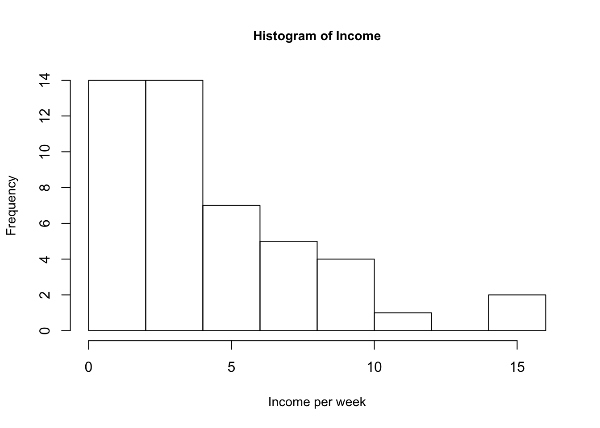
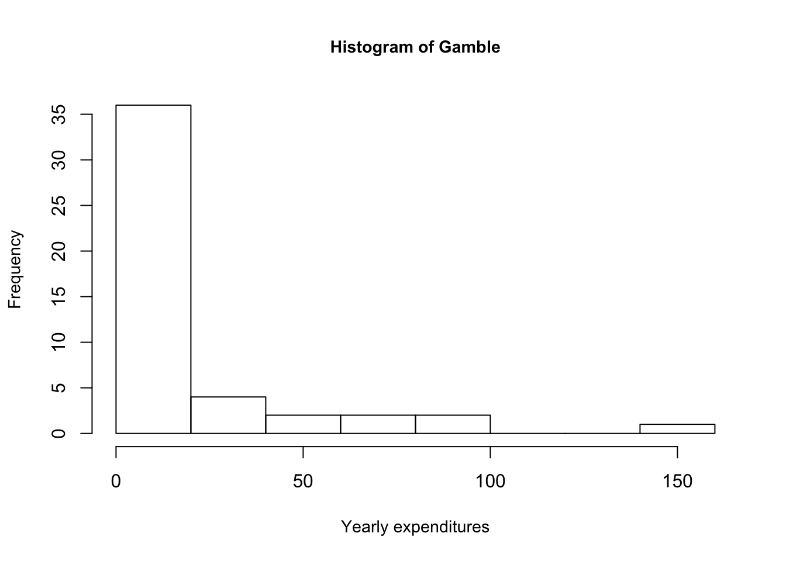
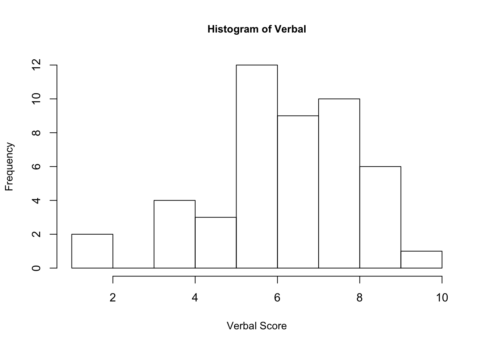
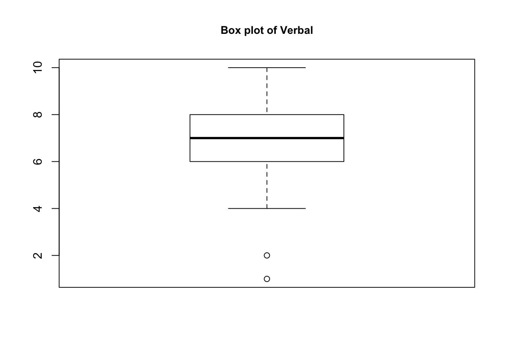
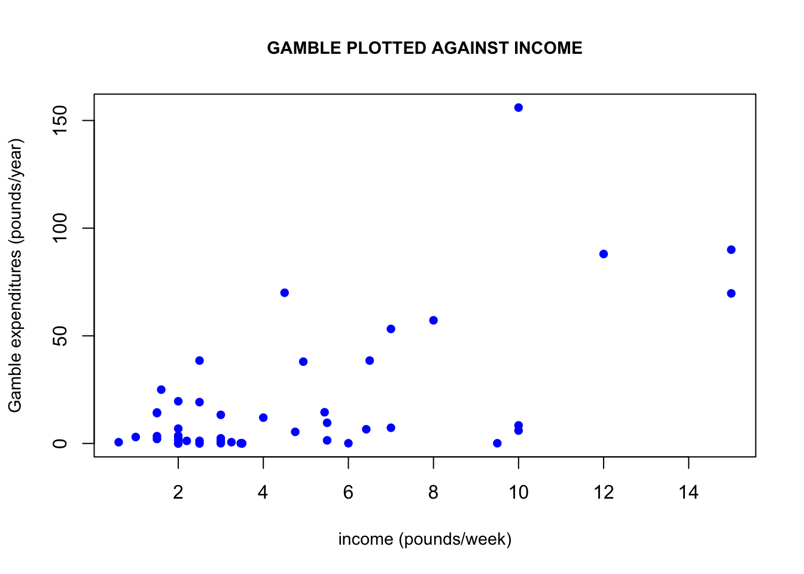
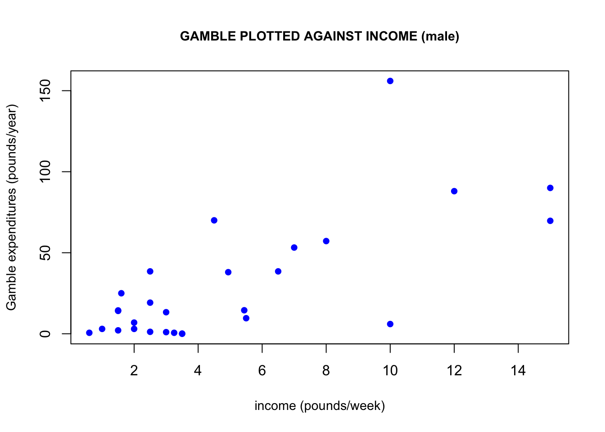
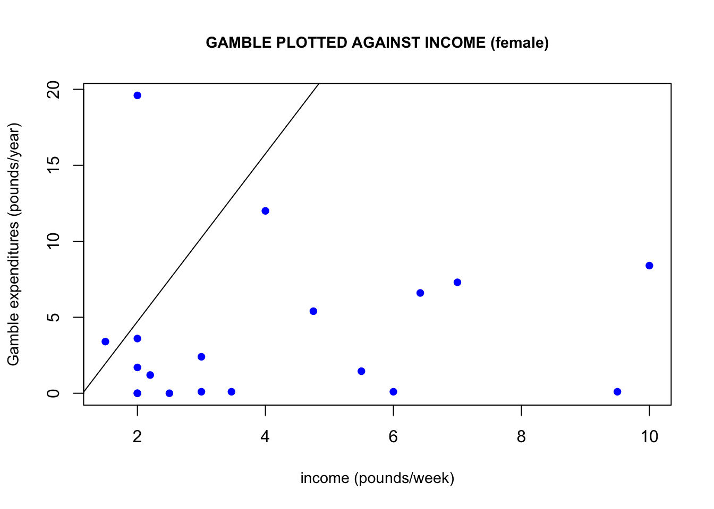

The dataset teengamb concerns a study of teenage gambling in Britain. More details about the study can be found in Ide-Smith & Lea (1988) Journal of Gambling Behavior, 4, 110-118. It contains five variables:
sex: 0 = male; 1 = femalestatus: socioeconomic status score based on parents’ occupationincome: in pounds per weekverbal: verbal score in words out of 12 correctly definedgamble: expenditure on gambling in pounds per yearMake a numerical and graphical summary of the data, commenting on any features that you find interesting. Limit the output you present to a quantity that a busy reader would find sufficient to get a basic understanding of the data. For the variable sex, assign labels “male” and “female” and make sure R is treating it as a categorical variable before you compute the summary. Also answer the following questions, incorporating the answers into your report:
Hints: After you install R (if it is not already installed on the system you are using) and the faraway package, you can type library(faraway) to load the package and data(teengamb) to load the data. Useful R functions for this homework: data(), summary(), hist(), plot(), boxplot(). You can always type help(subject) to get detailed help on the subject, e.g. help(plot). Or you can type help.start() to get interactive help with a search engine.

Below we can find a quick summary of the data. Since sex is a categorical variable, we are only given the number of observations of corresponding to the sex of the person.
Observing the income and gamble variables, we notice that their means are greater than their medians. This is indicative that the distribution of the income and verbal variables are skewed right, i.e. greater portion of observations are bunched towards the left. The two histograms of these two variables below quickly demonstrate this explanation, with a large frequency of observations on the left.
Another connection between the income and gamble variables is that if we plot gamble against income, we can observe a positive linear trend arising. This linear trend would imply that the higher a person’s weekly income, the more they would be likely to spend on gambling per year. One may wonder if women would be more/less likely than men to spend on gambling. If we plot only male income observations and only female income observations against their corresponding gambling expenditures, we get some interesting results. Males seem to be driving this linear relationship the between income and gambling expenditures the most. Keep in mind that the y-axes of these two graphs are not the same, which demonstrates that females also spend a lot less on gambling than men do.
The description of the verbal variable from the teengamb data set defines the maximum score as 12. Looking at the histogram below for the verbal variable, we see that its values range from 1 – 10. The histogram also shows that the verbal score of 6 has the highest frequency. By inspection, the observations seem to follow a normal distribution with greater frequency about the middle and less frequency at the tails.
The box plot of verbal easily shows that the verbal scores 1 and 2 are the outliers in the data. Running the command on R: “teengamb[teengamb$verbal <= 2, ],” our output below shows rows 31 and 35 from the data set, with their corresponding values. Interestingly these two rows are starkly different in their income and gamble values given their similarity in verbal score.